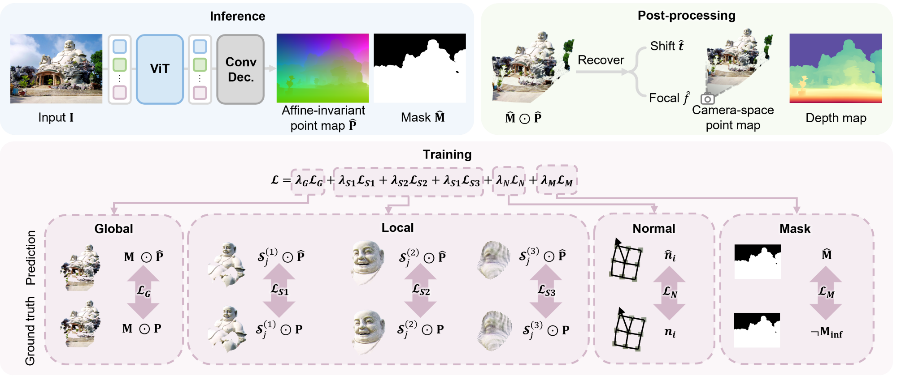
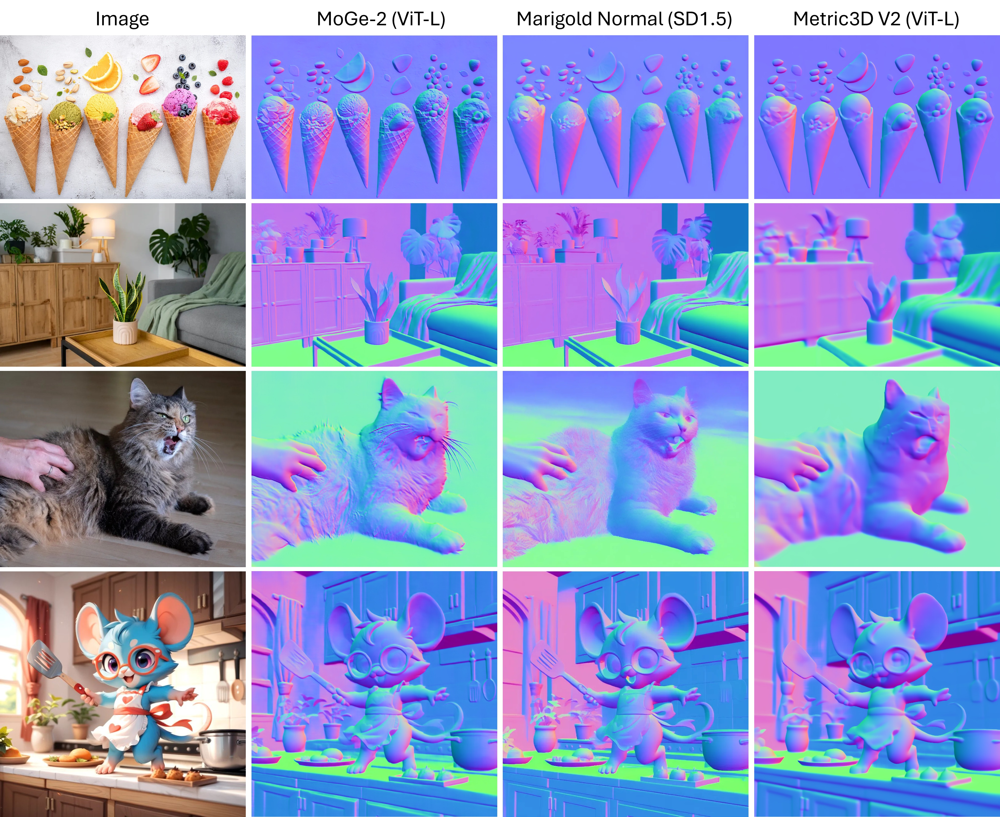
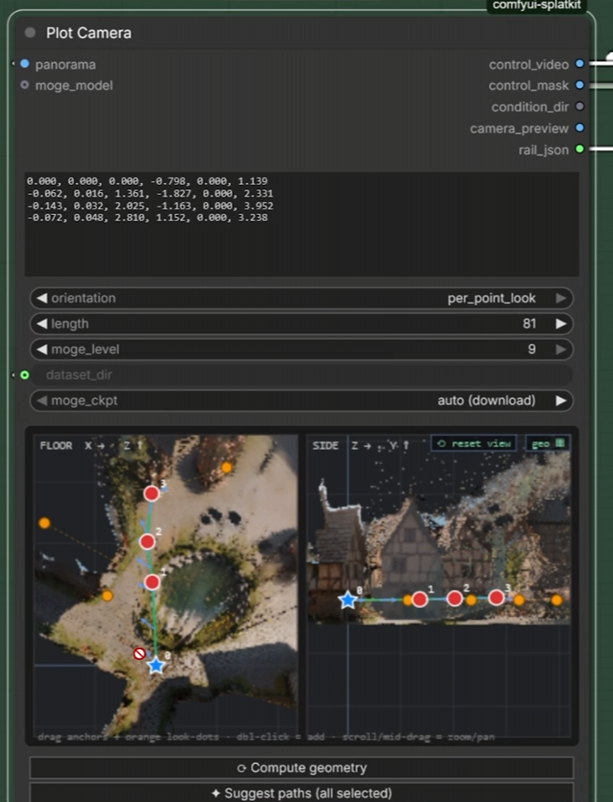

Phase 2 · Depends on P1 pano · Unlocks P3
Pano → first splat
Compute geometry, plot one drone rail, SphereSfM, splat.ply. WAN hole-fill waits for Phase 3.

01Pipeline
P2 implements SETUP + CAMERA PLOT 1 from
docs/260825_MICKMUMPITZ_3DGS-Dataset-Creator_1-0_SMPL.json.
CAMERA 2–4, WAN, and HiRes stay in Phase 3.
pano.pngsplat.ply


02Geometry — before Compute geometry
Button label copied from SplatKit: Compute geometry.
Rail editor, Suggest paths, Preview, Confirm stay disabled until this runs.
Missing pano.png → run Phase 1 first. No second file picker.
Votion 3DGS
idle
Suggest paths fills four rails — Phase 3. P2 is one rail.
Empty until Compute geometry. Play lives on the Preview flight pane, not the rail.
Log
Connect a panorama and click Compute geometry. Rail editor locked.
Help
Compute geometry first. FLOOR / SIDE / Preview stay empty until then. Then drag knots and look arrows. Star is origin, not draggable. look_forward + drag arrow switches that rail to per_point_look. Preview flight is the third pane under FLOOR/SIDE. Confirm gates Reconstruct.
03Geometry — after compute + one rail
Star = anchor 0 = (0,0,0), not draggable.
P2 default is SMPL node 27: look_at_target, 81 frames, moge_level 9.
Integer 9 is not fps. Height is Y, not a dropdown.
Votion 3DGS
previewPlay the mesh control video on the Preview flight pane (black holes OK) before Confirm. Wall clip is a P3 choice.

Chrome copied from SplatKit Plot Camera. Star 0 cannot move. Drag numbered cameras and the orange look-at (arrows follow). Play lives on the Preview flight pane.
Log
Star locked. Preview played. Confirm unlocks Reconstruct.
Help
Drag numbered knots; drag yellow look arrows. Star cannot move. P2 is one rail (SMPL node 27 look_at_target). Height is Y of a knot, not a dropdown. Preview the mesh flight (black holes OK) before Confirm. Wall clip is a P3 choice.
Orange look-at = look_at_target (all cyan arrows aim at one point). Yellow per-knot looks appear only in per_point_look.

04Reconstruct and Splat (dummy)
Votion 3DGS
sfmSingle trajectory. Dual-res HiRes is Phase 3. Follow SplatKit COLMAP convention.
Log
colmap/sparse/0 after success.
Help
SphereSfM writes COLMAP pinholes (
images/ + sparse/0), not WorldFM transforms.json.
P2 is a single trajectory. Dual-res HiRes waits for Phase 3.
Votion 3DGS
trainIf P0 gsplat spike failed: Train disabled; Open COLMAP folder still works (Brush).
Live train (V1 Continue)
Log
outputs/alpine_01/splat.ply — Unreal check is manual (MLSLabsRenderer).
Help
Train writes
splat.ply. Cap ~3M (1M hides 8K). Continue / Retrain / Reload from disk.
If gsplat failed in P0: Train disabled; Open COLMAP folder still works (Brush).
Unreal: UE 5.5 + MLSLabsRenderer. MoGe pointcloud.ply is not the Unreal asset.
05Acceptance · do not
- Missing
pano.png→ clear error (run Phase 1 first). - Compute geometry disabled until pano exists; rail editor disabled until geometry exists.
- FLOOR and SIDE visible; origin star at
(0,0,0)and not draggable. - Mesh-only flight preview plays before Confirm (black holes expected).
colmap/sparse/0exists after Reconstruct.- If gsplat passed:
splat.ply. If failed: UI says so; COLMAP still valid for Brush.
No Krea, no 4-rail default, no 8K HiRes, no WorldFM frames. Do not name a look mode forward_look or Height. Do not treat widget 9 as fps.